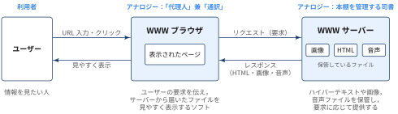
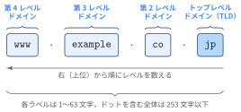
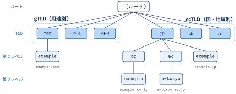
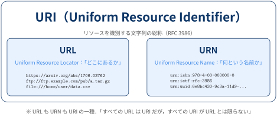

- URI（Uniform Resource Identifier）は，リソースを識別する文字列の総称
- URL（Uniform Resource Locator）は URI の一種で，リソースがどこにあり，どうやって取りに行くかを表す
- URN（Uniform Resource Name）も URI の一種で，リソースの場所に関係なく変わらない名前を表す
- すべての URL は URI ですが，すべての URI が URL とは限らない
URLとは
Definition 1 Uniform Resource Locator
- インターネット上のリソース（Webページ，画像，ファイル，APIなど）の場所を一意に指定するための文字列
- 「どの通信方式で（スキーム）」「どのサーバーへ（ドメイン）」「どの場所にあるか（パス）」を表現する住所のような役割を持つ
https://www.example.com:443/docs/tutorial/index.html?lang=ja#section1| 要素 | サンプル | 説明 |
|---|---|---|
| スキーム (Scheme) | https |
通信プロトコル．http，https，ftp など． |
| ホスト名 / ドメイン名 (Host / Domain) | www.example.com |
接続先サーバーの名前．DNSによってIPアドレスへ変換される． |
| ポート番号 (Port) | 443 |
サーバー上のサービス識別番号．省略時はスキームのデフォルト値を利用． |
| パス (Path) | /docs/tutorial/ |
サーバー内のディレクトリやリソースの場所． |
| ファイル名 (File Name) | index.html |
取得したい具体的なファイル． |
| クエリ文字列 (Query String) | ?lang=ja |
サーバーへ渡す追加パラメータ． |
| フラグメント (Fragment) | #section1 |
ページ内の特定位置を指定．ブラウザ側で解釈される． |
URLの分解図
https://www.example.com:443/docs/tutorial/index.html?lang=ja#section1
│ │ │ │ │ │ │
│ │ │ │ │ │ └─ フラグメント
│ │ │ │ │ └──────── クエリ文字列
│ │ │ │ └────────────────── ファイル名
│ │ │ └───────────────────────────────── ポート番号
│ │ └───────────────────────────────────── ドメイン名
│ └───────────────────────────────────────────────────── "://"
└─────────────────────────────────────────────────────────── スキーム| URL要素 | 住所で例えると |
|---|---|
| スキーム | 配送方法（宅配便・郵便など） |
| ドメイン | 建物・会社名 |
| ポート | 部署番号・受付窓口 |
| パス | フロアや部屋への道順 |
| ファイル名 | 受取人 |
| クエリ | 配送メモ |
| フラグメント | 「資料の3ページ目を見てください」 |
Webページは，ページの一部に別ページの位置情報を埋め込んで両者を結びつけることのできるハイパーテキストという文章で作られています． このハイパーテキストを使って世界中のネットワークで情報を公開・共有するサービスをWWWサービスと呼びます．
WWW は World Wide Web の略で，ふだんは単に「Web」と呼ばれます．そのため WWWサービスはWebサービスとも呼ばれ，WWWサーバー・WWWブラウザも，それぞれ Webサーバー・Webブラウザと呼ぶのが一般的です．
WWWサービスは，WWWサーバーとWWWブラウザのやり取りで成り立ちます．
| 項目 | WWWサーバー | WWWブラウザ |
|---|---|---|
| 機能 | ハイパーテキストや画像，音声ファイルを保管し，要求に応じて提供する | ユーザーの要求を伝え，サーバーから届いたファイルを見やすく表示するソフト |
| アナロジー | 本棚を管理する司書のような存在 | ユーザーの代わりに情報を取ってくる「代理人」兼「通訳」 |

スキームの種類
| スキーム | 用途 | 例 |
|---|---|---|
https |
暗号化されたWeb通信（現在の標準） | https://www.example.com |
http |
暗号化されていないWeb通信 | http://www.example.com |
ftp |
ファイル転送 | ftp://ftp.example.com/data.csv |
sftp |
SSHを利用した安全なファイル転送 | sftp://server.example.com/report.pdf |
ssh |
リモートサーバーへの接続 | ssh://user@example.com |
file |
ローカルファイルの参照 | file:///home/user/report.pdf |
mailto |
メール作成 | mailto:user@example.com |
tel |
電話発信 | tel:+81-90-1234-5678 |
ws |
WebSocket通信 | ws://example.com/socket |
wss |
暗号化されたWebSocket通信 | wss://example.com/socket |
ドメイン名 (Domain Name)
- ドメイン名は，インターネット上のサーバーを識別するための人間向けの名前
- 本来コンピュータ同士は IPアドレス（例:
142.250.196.78）で通信
www.yahoo.co.jp
│ │ │ │
│ │ │ └─ 国コード (ccTLD)
│ │ └──── 組織の属性
│ └────────── 組織名
└────────────── ホスト名| 要素 | 例 | 説明 |
|---|---|---|
| ホスト名 | www |
Webサーバーやサービスを表す名前 |
| 組織名 | yahoo |
企業・組織・サービスの名前 |
| 組織の属性 | co |
組織種別（Company, Organization, Academic など） |
| 国コード | jp |
国や地域を表すコード |
Exmaple 1 u-tokyo.ac.jp
www.u-tokyo.ac.jp
│ │ │ │
│ │ │ └─ 日本
│ │ └──── 教育機関
│ └────────── 東京大学
└────────────── Webサーバーco.jp は参照先サーバーが日本国内にあることを示しているわけではない
co.jpが示すのはドメインを登録した組織の属性（日本国内で登記された営利法人）であり，サーバーの物理的な所在地ではない- 日本で登記していれば外国企業も登録できるので，
co.jpだから日本企業とも限らない
- 日本で登記していれば外国企業も登録できるので，
- ドメイン名は任意のサーバーに対応付けられる．サーバーの所在地は，DNS がドメイン名を解決した先の IPアドレス（＝どこでホスティングしているか）で決まる
- 海外リージョンのクラウドや CDN を使っていれば，
co.jpでも海外のサーバーに接続される - 逆に
.comのサイトが日本国内のサーバーで運用されていることもある
- 海外リージョンのクラウドや CDN を使っていれば，
- 個人データを扱う外部サービスについて「国内で保存されているか」を確認したいときは，ドメイン名から推測せず，契約書や利用規約に書かれたデータ保管場所（リージョン）を確認する
# ドメイン名 → IPアドレスを確認
dig +short www.example.co.jp
# IPアドレスの割り当て先（組織・国）を確認
whois <IPアドレス>URLを読むときに勘違いしやすいポイント
スキームはアクセスに使うプロトコルを表す
http://host.example.co.jp/...のhttp:は，HTTP を使って目的のデータにアクセスすることを示す- スキームを見れば通信方式は分かるが，ドメイン名やポート番号からサーバーの役割や所在地までは分からない
ポート番号 :8080 はプロキシ経由の接続を意味しない
- HTTP は通常ポート80番，HTTPS は443番を使う．これらは既定値なので，普段のURLでは省略される
- 8080番は「代替HTTPポート」と呼ばれ，80番の代わりに使われることがある
- プロキシサーバーや開発用のWebサーバーでよく使われるが，8080番＝プロキシという決まりはない
- プロキシを経由するかどうかはブラウザやOSのプロキシ設定で決まり，URLには現れない
http://host.example.co.jp/file # ポート省略 → 80番に接続
http://host.example.co.jp:8080/file # 8080番で待ち受けているWebサーバーに接続ファイル名の部分はHTMLファイルに限らない
- ファイル名の部分には，HTML だけでなく画像，PDF，CSV など任意の形式のファイルを指定できる
- 拡張子は目安にすぎない．ブラウザはサーバーが返す
Content-Typeヘッダを見て，ファイルの形式を判断する /docs/のようにファイル名を省略すると，サーバーが既定のファイル（index.htmlなど）を返す
gTLD vs ccTLD
Definition 2 トップレベルドメイン (Top-Level Domain, TLD)
- ドメイン名をドット
.で区切った1つ1つの部分をラベルと呼ぶ - ラベルのうち最も右側にあるものをトップレベルドメイン（TLD）という
- TLDから左へ順に，第2レベルドメイン，第3レベルドメイン，…と呼ぶ
- 各ラベルは1〜63文字，ドットを含むドメイン名全体は253文字以下とする
- TLDは，用途別に設けられた gTLD（generic TLD）と，国・地域ごとに割り当てられた ccTLD（country code TLD）に大別する

ドメイン名は右へ行くほど上位の階層を表します．住所を「番地，町，市，国」の順に並べると右端が最も大きな単位になるのと同じで，www.example.co.jp は「日本（jp）の企業（co）である example 社の www というサーバー」と読めます．
レベルは右から数えるので，同じ www でもドメイン名によって何番目のレベルになるかが変わります．
| ドメイン名 | 第4レベル | 第3レベル | 第2レベル | TLD |
|---|---|---|---|---|
www.example.co.jp |
www |
example |
co |
jp |
www.example.com |
www |
example |
com |
Exmaple 2 URLからTLDを読み取る
URLからTLDを読み取るときは，まずスキーム（http://）とパス（/index.html 以降）を取り除いてドメイン名だけを取り出し，その最も右側のラベルを見ます．
| URL | ドメイン名 | TLD | 種類 |
|---|---|---|---|
http://example.co.jp/index.html |
example.co.jp |
jp |
ccTLD |
https://www.example.com/docs/ |
www.example.com |
com |
gTLD |
https://www.u-tokyo.ac.jp/ |
www.u-tokyo.ac.jp |
jp |
ccTLD |
example.co.jpのcoは TLD ではない．coは第2レベルドメインで，jpの中での組織の種別を表す
gTLD と ccTLD の違い
DNS はドメイン名を，ルート（.）を頂点とする木構造で管理しています．ルートの直下に置かれるのが TLD で，その下に第2レベル，第3レベルと枝分かれしていきます． 各階層の管理者は自分の直下の名前だけを管理するので，.jp を管理する組織は co.jp や example.jp を割り当て，example.co.jp の下にある www は example 社が自由に決められます．

| 項目 | gTLD (Generic Top-Level Domain) | ccTLD (Country Code Top-Level Domain) |
|---|---|---|
| 意味 | 分野別トップレベルドメイン（汎用目的） | 国コードトップレベルドメイン |
| 割り当て単位 | 用途・分野ごと．国に依存しない | 国・地域ごと |
| 文字数 | 3文字以上 (.com, .museum, .app) |
2文字．ISO 3166-1 の国コードがもと (.jp, .us) |
| 管理者 | ICANN と契約したレジストリ（.com は Verisign） |
各国・地域のレジストリ（.jp は JPRS） |
| 登録条件 | 多くは誰でも登録できる | 国・地域ごとに異なる（.jp は日本国内の住所が必要） |
| 主な用途 | グローバルな組織やサービス | 特定の国・地域向けサービス |
| 例 | .com, .org, .net, .app |
.jp, .uk, .de, .fr |
Exmaple 3 代表例
| gTLD | 意味 |
|---|---|
.com |
Commercial（商用） |
.org |
Organization（組織）．非営利団体用 |
.net |
Network |
.info |
Information |
.app |
アプリケーション |
.dev |
開発者向け |
| ccTLD | 国・地域 |
|---|---|
.jp |
日本 |
.us |
アメリカ合衆国 |
.uk |
イギリス |
.de |
ドイツ |
.fr |
フランス |
.cn |
中国 |
.jp ドメインの種類
ccTLD の下をどう区切るかは，国・地域ごとのレジストリが決めます．.jp では，第2レベルの付け方によって次の種類があります．
| 種類 | 形 | 例 | 登録できる組織 |
|---|---|---|---|
| 属性型 JP ドメイン | ○○.co.jp など |
co.jp（企業），ac.jp（大学），go.jp（政府機関），or.jp（財団法人など），ne.jp（ネットワークサービス） |
組織の種別ごとに決まった組織．1組織1つまで |
| 汎用 JP ドメイン | ○○.jp |
example.jp |
日本国内に住所があれば個人・組織を問わない |
| 都道府県型 JP ドメイン | ○○.<都道府県名>.jp |
example.tokyo.jp |
日本国内に住所があれば個人・組織を問わない |
co.jp は1組織1つまでしか登録できず，登記の確認もあるため，co.jp のドメイン名はその企業が実在することの目安になります（ただし，サーバーの所在地を示すものではありません．上の callout を参照）．
.tokyoや.osakaは地名だが ccTLD ではない．2012年以降に追加された新しい gTLD（地理的名称の gTLD）に分類される- 逆に
.io（英領インド洋地域），.ai（アンギラ），.tv（ツバル）は ccTLD だが，「I/O」「AI」「TV」の連想から国と関係なく汎用的に使われている - イギリスの ISO 3166-1 の国コードは
GBだが，ccTLD は歴史的な経緯から.ukを使う - 確実に区別したいときは，IANA の Root Zone Database で TLD の種類（generic / country-code など）を確認する
URL vs URI vs URN
Definition 3 Uniform Resource Identifier (URI)
- リソースを識別するための文字列の総称を URI と呼ぶ．書式は RFC 3986 で定める
- URI のうち，リソースの場所（どこにあるか）を示すものを URL（Uniform Resource Locator）という
- URI のうち，リソースの名前（何という名前か）を示すものを URN（Uniform Resource Name）という．URN は場所が変わっても変わらない
- URL も URN も URI の一種である．すべての URL は URI だが，すべての URI が URL とは限らない

本を例にとると，次のように対応します．
| 種類 | 本の例 | 文字列の例 |
|---|---|---|
| URN（名前） | ISBN 番号．どの図書館にあっても同じ | urn:isbn:978-4-00-000000-0 |
| URL（場所） | 「○○図書館 3階 B棚 5段目」 | https://arxiv.org/abs/1706.03762 |
| URI | 上の2つをまとめた「本を特定する情報」の総称 | 上の両方 |
URN は名前を表すだけなので，それだけではブラウザで開けません．一方 URL にはアクセス方法（https などのスキーム）と場所が入っているので，そのままリソースを取りに行けます．
URI の構成要素
URI の一般形は，RFC 3986 で次のように定められています．
scheme ":" [ "//" authority ] path [ "?" query ] [ "#" fragment ]| 構成要素 | 例 | 役割 |
|---|---|---|
| scheme | https |
どのプロトコル・方式で扱うか |
| authority | www.example.com:8080 |
どのサーバーか（userinfo@host:port） |
| path | /docs/uri |
サーバー内のどの場所か |
| query | lang=ja |
追加のパラメータ（key=value&...） |
| fragment | sec2 |
ページ内の位置．サーバーには送られない |
上の構成要素を，URL, URNと対応させると次のようになります．
www.example.comは authority の中の host にあたる．ドメイン名 の節で見たwwwは，このホスト名の先頭のラベルにすぎない- 冒頭の表のポート番号は authority の
:port，パスとファイル名はまとめて path にあたる - URN（
urn:isbn:...）には//も authority もない．同じ一般形のうちscheme:pathだけを使った URI だとわかる
https://www.example.com:8080/docs/uri?lang=ja#sec2
└─┬─┘ └────────┬─────────┘└───┬───┘ └──┬──┘ └┬─┘
scheme authority path query fragment
urn:isbn:978-4-00-000000-0
└┬┘ └─────────┬──────────┘
scheme pathAppendix: スラッグ (slug)
Definition 4 slug
- URLのパスのうち，記事やページを識別する部分に使う文字列
- 人間が読める短い文字列にすることが多く，記事のユニークなIDの役割を果たす
https://zenn.dev/ユーザー名/articles/example-article
└────────────── slugExmaple 4 Zennのslug
Zennでは記事や本ごとにslugが割り当てられ，そのままURLのパスになります．
- Web上のエディタで記事を作成した場合，slugはランダムに生成される
- コンテンツをGitHubリポジトリで管理する場合は，ファイル名やディレクトリ名でslugを指定できる
| コンテンツ | slugの指定方法 | URL |
|---|---|---|
| 記事 | articles/[slug].md というファイル名にする |
https://zenn.dev/ユーザー名/articles/[slug] |
| 本 | books/[slug] というディレクトリ名にする |
https://zenn.dev/ユーザー名/books/[slug] |
Exmaple 5 このブログのslug
このブログも，記事ディレクトリ名がそのままURLのパスになります．posts/2026-06-01-uniform-resource-locator/index.qmd はレンダリング後に次のURLで公開されます．
https://ryonakagami.github.io/regmonkey-datascience-blog/posts/2026-06-01-uniform-resource-locator/
└─────────────────────────────────┘
slug